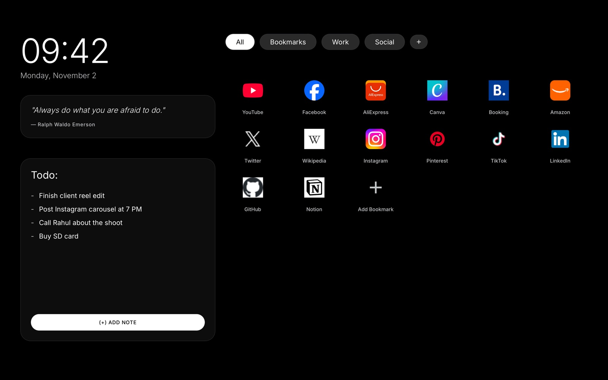
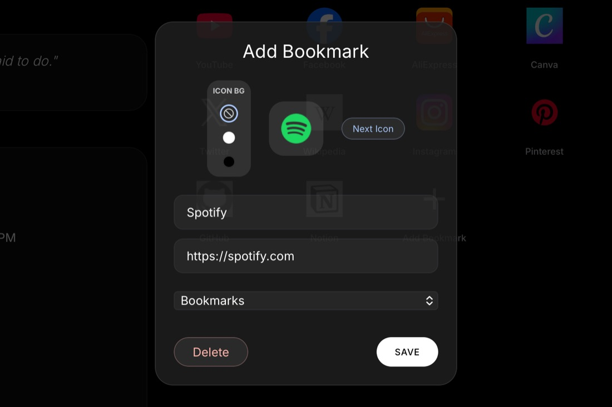
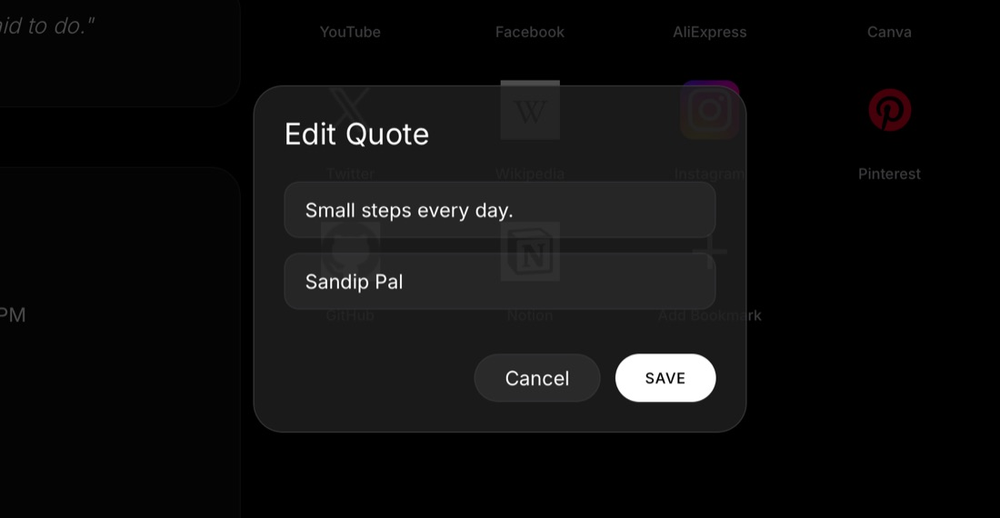
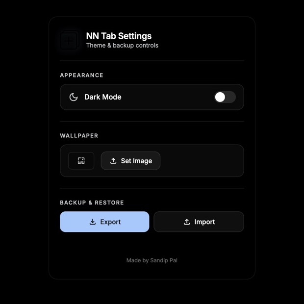

Browser extension · Safari & Chrome
NN Tab
A minimalist dark new tab page. Live clock, your own quote, a notes list and a bookmarks grid with categories, drag-and-drop and auto-fetched icons. Plain HTML, CSS and JavaScript, so it opens instantly. Free.

Mac · about 15 minutes
Install on Safari
Safari extensions live inside a small Mac app, so you build it once on your own Mac with Xcode (free). Most of the time is waiting for Xcode to download.
- Download NN TabClick “Download ZIP” at the top of this page. Double-click the file in Downloads to unzip it. You get a folder called Safari-New_Tab_Extension-main.
- Install XcodeGet Xcode free from the Mac App Store. Open it once and let it finish installing its extra parts.
- Sign in to XcodeXcode → Settings → Accounts → + → Apple ID. A free Apple ID is enough. Select your team, click Manage Certificates, then + → Apple Development.
- Find your Team IDOpen Terminal (Cmd + Space, type Terminal) and paste this. Copy the 10-character code after OU=.
security find-certificate -c "Apple Development" -p | openssl x509 -noout -subject - Build the appPaste this in Terminal, replacing YOURTEAMID with your code. Wait for “✓ Built”.
cd ~/Downloads/Safari-New_Tab_Extension-main && TEAM_ID=YOURTEAMID zsh scripts/build-safari.sh - Open NN Tab onceThis moves the app to Applications and opens it. You can close it after it opens.
cp -R "safari-app/build/Build/Products/Release/NN Tab.app" /Applications/ && open "/Applications/NN Tab.app" - Turn it on in SafariSafari → Settings → Extensions → tick NN Tab.
- Make it your new tabSafari → Settings → General → set “New windows open with” and “New tabs open with” to NN Tab.
- Allow bookmark iconsClick the NN Tab button in the Safari toolbar → Allow on all websites. NN Tab needs this to fetch website icons.
Everyday use
How to use it
Everything saves by itself on your device.



Stuck?
If something goes wrong
Safari → Settings → Advanced → tick “Show features for web developers”. Then Develop menu → Allow Unsigned Extensions, and check Extensions again.
Run this, enter your Mac password, then build again.
sudo xcode-select -s /Applications/Xcode.appClick the NN Tab button in the Safari toolbar and choose Allow on all websites.